Akciós könyveink
Vidd el őket akár 20% kedvezménnyel!

George Orwell - 1984
Winston Smith élete egy totalitárius államban zajlik, ahol minden pillanatról figyelik, és a valóságot az állam alakítja át. A Nagy Testvér mindent irányít, és mindenkit manipulál. Winston megpróbál ellenszegülni az elnyomásnak, de a rendszer kegyetlen és könyörtelen.

J.K. Rowling – Harry Potter
Harry Potter egy fiatal fiú, aki megtudja, hogy ő egy varázsló, és egy varázslóiskolába, a Roxfortba kerül. Itt barátokra talál, miközben egy titkot is felfedez: egy sötét varázsló, Voldemort, aki egykor megölte szüleit, még mindig él.

Margaret Atwood – A szolgálólány meséje
A regény egy disztópikus jövőben játszódik, ahol a nők jogai teljesen elnyomottá váltak, és csak a szaporodásra alkalmas nőket, az úgynevezett "szolgálólányokat" tartják meg. A főszereplő, Offred, egy ilyen szolgálólány, aki megpróbálja visszaszerezni szabadságát.
Könyvkínálatunk
Homérosz - Odüsszeai
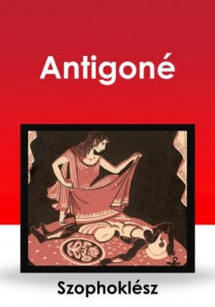A Trója ostroma után tíz évet bolyongó Odüsszeusz története a világirodalom egyik legnagyobb hőseposza. Homérosz klasszikus művében a ravasz ithakai király hazafelé tart, de útját istenek haragja, szörnyetegek, csábító nymphák és varázslatok szegélyezik.
Homérosz – Iliász
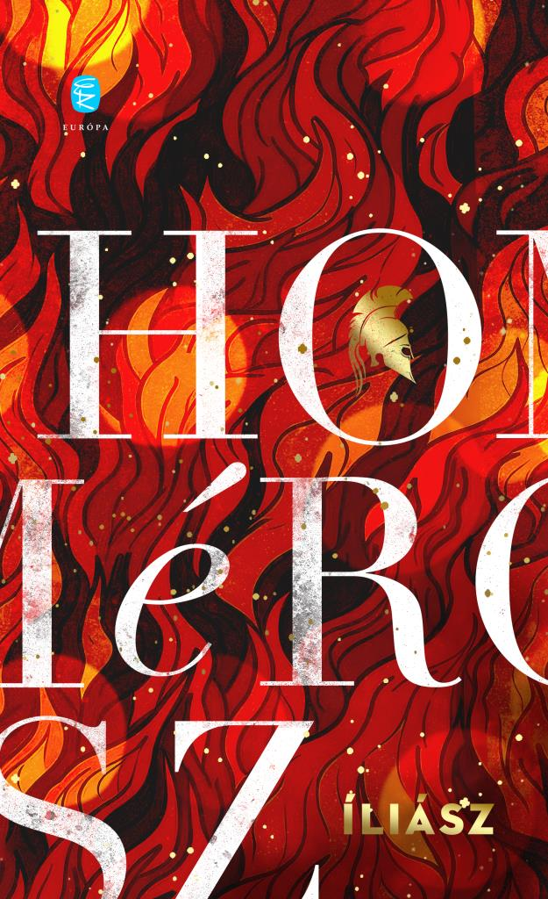A trójai háború hősei, istenei és szenvedései elevenednek meg ebben az időtlen eposzban. Akhilleusz haragja és Hektór bátorsága örökre meghatározták, mit jelent hőssé válni. Az Iliász nemcsak a háborúról szól – hanem az emberi lélek küzdelmeiről is.
Szophoklész – Antigoné
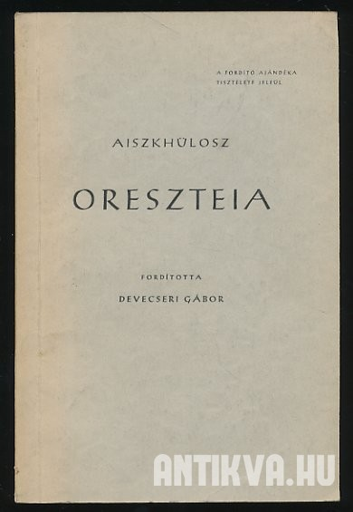Antigoné, aki szembeszáll a királyi törvénnyel, hogy testvérét méltó módon eltemethesse, a családi kötelesség és az állami törvények közötti konfliktust testesíti meg.
Euripidész – Médeia
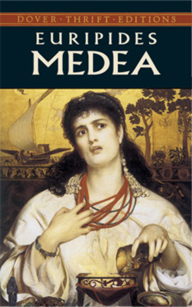Euripidész híres tragédiája, amelyben a boszú és a csalódás ereje elpusztítja a boldogságot, amelyet Medeia és Jázón együtt építettek. A mű elgondolkodtat a szerelem, a becsület és az igazság kérdéseiről, miközben a fájdalom és az elhagyatottság szörnyű következményeit mutatja be.
Aiszkhülosz – Oreszteia
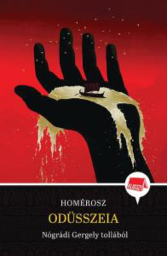Az Oreszteia trilógiájában Aiszkhülosz a családi bosszú örök körforgását és az igazságosság keresését tárja elénk. Oresztész, az elátkozott család sarja, aki apja meggyilkolásáért áll bosszút, miközben az istenek és a társadalom igazságérzete összecsap. Az Oreszteia az emberi és isteni törvények határvonalát kutatja.
Platón – Az állam
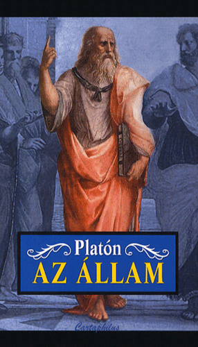Platón híres műve az ideális állam és az igazságos társadalom elméletét tárgyalja. Szókratész dialógusai révén Platón olyan filozófiai alapelveket vizsgál, mint az igazság, a tudás és a politikai vezetés. Az Állam nem csupán egy politikai utópia, hanem az egyéni erkölcs és a közjó kapcsolatát is elemzi.
Arisztotelész – Nikomakhoszi etika
Arisztotelész etikai műve az erények és a boldog élet elérésének kérdését feszegeti. A Nikomakhoszi etika arra keresi a választ, hogyan élhetünk jó életet, és hogyan érhetjük el a legnagyobb boldogságot az erények gyakorlásával. A filozófia alapműve, amely az emberi cselekedetek morális alapjait vizsgálja.
Epiktétosz – Kézikönyvecske
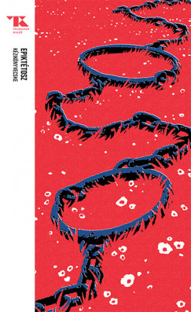Epiktétosz Kézikönyvecskéje a stoikus filozófia gyakorlati útmutatója, amely a belső nyugalom és a külső körülményekkel való harmónia elérésére tanít. Az önuralom, az élet elfogadása és a sors iránti tisztelet az alapelvek, amelyek segítenek a boldog és tartalmas élet megélésében.
Szeneka – Az élet rövidségéről
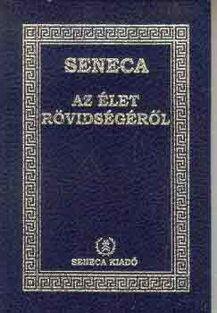Szeneka híres értekezésében az élet rövidségét és annak helyes kihasználását tárgyalja. A Az élet rövidségéről arra figyelmeztet, hogy az emberek túl sok időt pazarolnak haszontalan dolgokra, és arra ösztönöz, hogy minden pillanatot tudatosan éljünk meg, hogy a valódi értékekre összpontosíthassunk.
Marcus Aurelius – Elmélkedések
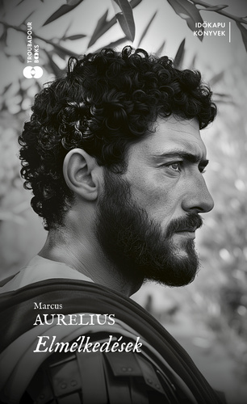Marcus Aurelius Elmélkedései a római császár személyes naplójának részletei, melyekben a stoikus filozófia elveit alkalmazza mindennapi életére. A mű segít megérteni a belső béke és erő megtalálásának titkát, miközben a császár a filozófia útján keres válaszokat az élet kihívásaira és a személyes fejlődésre.
Hérodotosz – A történetírás
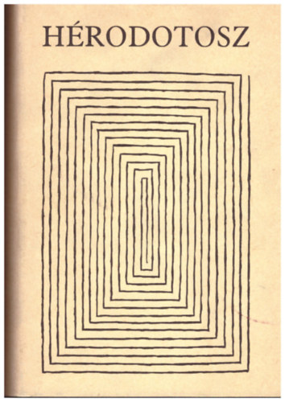Hérodotosz, az "történetírás atyja", az A történetírás című művében először próbálja meg összefoglalni és rendszerezni a világ eseményeit, különös figyelmet fordítva a háborúkra és azok emberi vonatkozásaira. A mű nemcsak egy-egy történelmi eseményt örökít meg, hanem bemutatja a különböző népek szokásait, kultúráit és hitvilágát, így alapvető fontosságú mű a történelemkutatás számára.
Thuküdidész – A peloponnészoszi háború története
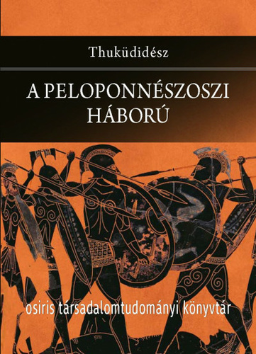Thuküdidész műve az ókori Görögország egyik legfontosabb történelmi feljegyzése, amely részletesen bemutatja a Peloponnészoszi háború küzdelmeit, okait és következményeit. A mű rendkívüli pontossággal és mély filozófiai elemzéssel dolgozza fel a háborút, és arra összpontosít, hogy miként formálják a politikai és emberi döntések a történelem menetét. Thuküdidész objektivitásra törekszik, és gyakran a háborús konfliktusok morális és társadalmi tanulságait is kifejti.
Edith Hall – Introducing the Ancient Greeks

Edith Hall könyve kiváló bevezető az ókori görög világba, amely megismerteti az olvasót a görög kultúra, filozófia, vallás és társadalom alapjaival. A mű átfogó képet ad a görög civilizáció fontosságáról és hatásáról, valamint betekintést nyújt abba, hogy miért tekintjük őket az európai kultúra alapítóiként.
Mary Beard – SPQR
Mary Beard SPQR című műve a római köztársaság és a birodalom történelmét tárgyalja, de az ókori görög világra is kiható jelentősége van, mivel a rómaiak erőteljesen építettek a görög kultúrára. Beard bemutatja a római politika, társadalom és kultúra fejlődését, és azt, hogy a görög hatások hogyan formálták a római világot. Az olvasó megismerheti a római civilizáció különböző aspektusait és azt, hogyan lett a Római Birodalom a görög örökség örököse.
Tom Holland – Persian Fire
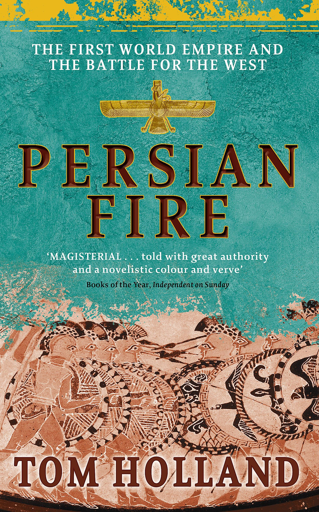Persian Fire a görög-perzsa háborúk történetét tárgyalja, amely kulcsfontosságú pillanata volt az ókori történelemnek. Tom Holland izgalmas és részletes írása a két civilizáció összecsapásának eseményeit és annak hosszú távú következményeit vizsgálja. A mű nemcsak a háborúkat és csatákat mutatja be, hanem azok kulturális, politikai és katonai hatásait is, miközben betekintést ad a görög és perzsa világok különbözőségeibe.
Nikosz Kazantzakisz – Zorbász, a görög
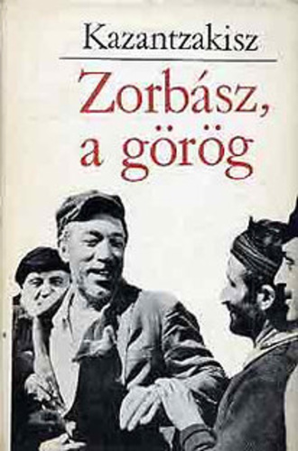Kazantzakisz világhírű regénye, Zorbász, a görög egy különc, életigenlő férfi, Zorbász történetét meséli el, aki mindenben a szabadságot és az élet örömeit keresi. A mű a görög lélek mélységeit és szépségét tárja elénk, miközben filozófiai kérdéseket is felvet az emberi sorsról, boldogságról és kiteljesedésről. Zorbász figurája örök szimbóluma a szabadság vágynak, és az élet igazi élvezetére való törekvésnek.
Nikosz Kazantzakisz – Akinek meg kell halnia
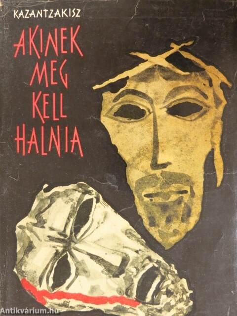Akinek meg kell halnia Kazantzakisz másik kiemelkedő műve, amely az emberi szenvedés és a halál kérdéseit vizsgálja. A regényben a főszereplő egy kis görög faluban él, ahol szembe kell néznie a családja és a közösség elvárásaival, miközben a saját belső vívódásaival is küzd. A mű mélyen foglalkozik a sors, az élet és a halál filozófiai aspektusaival, miközben egy erőteljes személyes történetet mesél el.
Vassilis Alexakis – Idegen szavak szótára
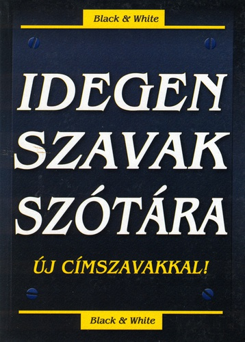Vassilis Alexakis Idegen szavak szótára című regénye az identitás, a nyelv és az elidegenedés témáját boncolgatja. A könyv egy fiatal görög férfi történetét meséli el, aki külföldön próbálja megtalálni helyét a világban. A mű egyszerre szórakoztató és filozofikus, miközben a kultúrák közötti különbségek és az otthontalanság érzésének pszichológiai hatásait is tárgyalja.
Petros Markaris – Bérgyilkosok esernyővel (krimi)
Petros Markaris Bérgyilkosok esernyővel című krimije a modern görög társadalom bűnügyi világát tárja elénk. A műben a híres detektív, Kostas Charitos nyomoz a főváros bűnügyekkel terhelt világában. A könyv izgalmas cselekménye mellett betekintést ad a görög társadalom morális dilemmáiba, miközben mélyebb társadalmi és politikai kérdéseket is feszeget.
Margarita Karapanu – Kassandra és a farkas
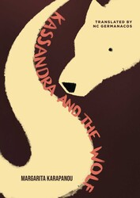Margarita Karapanu – Kassandra és a farkas egy modern görög regény, amely egy fiatal nő, Kassandra történetét meséli el. A mű egy erőteljes, női perspektívát kínál a görög mitológiai hősnő, Kassandra, és a női szerepek társadalmi elvárásai között feszülő ellentétekre.
Stephen Fry – Mítosz
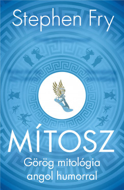Stephen Fry Mítosz című könyve egy friss, szórakoztató és könnyen érthető újragondolása a görög mitológiának. Fry lebilincselő stílusában meséli el az istenek, hősök és titánok történetét, bemutatva a mítoszok világát a mai olvasók számára. A mű nemcsak történelmi érdekességeket, hanem humoros és szellemes megközelítést is kínál, így ideális bevezetés a görög mitológia gazdag és izgalmas univerzumába.
Madeline Miller – Kirké
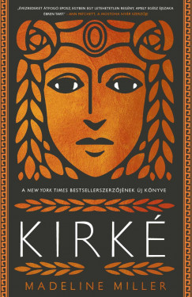Madeline Miller Kirké című regénye a görög mitológia egyik legismertebb női alakját, Kirkét állítja középpontba. A történet egy új, női szemszögből meséli el az istennő életét, aki az Odüsszeusz történetéből ismert. A könyv a női erő, a magány és a hatalom kérdéseit vizsgálja, miközben varázslatos világba repít bennünket, ahol a hagyományos mítoszokat modern, érzékeny olvasattal és erőteljes karakterábrázolással találkozhatunk.
Madeline Miller – Akhilleusz dala
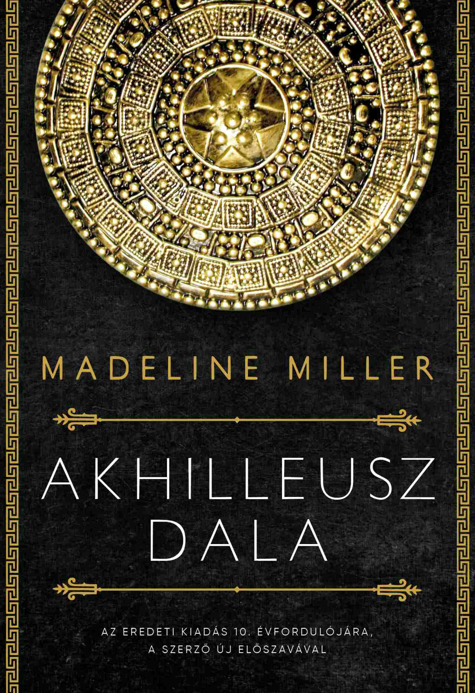Madeline Miller Akhilleusz dala egy másik híres regénye, amely a görög mitológia egyik legnagyobb hősének, Akhilleusznak és Patroklosz barátságának, valamint szerelmének történetét meséli el. A mű az Iliász és a görög mitológia klasszikus elemeit újraértelmezi, miközben a szeretet, a háború, a sors és az emberi gyengeségek örök témáit feszegeti. Miller érzelmekkel teli és mélyreható története egy olyan Akhilleuszt mutat be, aki nemcsak hős, hanem ember is.
Natalie Haynes – A Thousand Ships
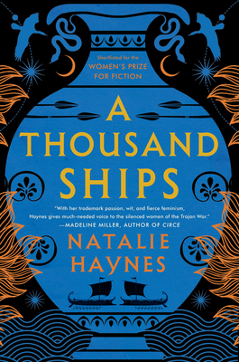Natalie Haynes A Thousand Ships című regénye a trójai háború eseményeit női szereplők szemszögéből mutatja be. A regény számos híres női karakter, mint Hekabé, Briseisz és Helen történetét szövi egybe, és a háború hatását a női perspektívából vizsgálja. Haynes műve a mítoszok mellett a nők szerepét és hangját helyezi középpontba, miközben felfedezi, hogyan élik meg a háború borzalmait azok, akik nem csupán áldozatai, hanem aktív résztvevői is voltak.
Rick Riordan – Percy Jackson és az olimposziak
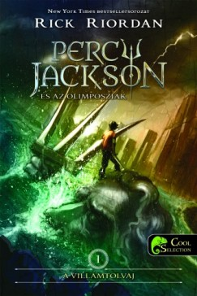Rick Riordan – Percy Jackson és az olimposziak Percy Jackson és az olimposziak Rick Riordan népszerű ifjúsági sorozata, amely egy fiatal fiú, Percy Jackson kalandjait követi, aki megtudja, hogy ő a görög istenek egyik utóda. Riordan könnyed és humoros stílusban meséli el a görög mitológia elemeit, miközben fiatal olvasók számára izgalmas és szórakoztató módon ismerteti meg őket az olimposzi istenekkel, hősökkel és kalandjaikkal.
Szophoklész – Antigoné
Antigoné, aki szembeszáll a királyi törvénnyel, hogy testvérét méltó módon eltemethesse, a családi kötelesség és az állami törvények közötti konfliktust testesíti meg.